IRON WRECK · GALERIA v7.0
Estas prévias foram renderizadas por software a partir das geometrias reais construídas pelo código do jogo. Elas apresentam os modelos dos carros e a disposição dos cenários, mas não são capturas diretas da renderização WebGL do Three.js; reflexos, texturas e efeitos de combate só aparecem no navegador compatível.
Os 10 veículos de guerra
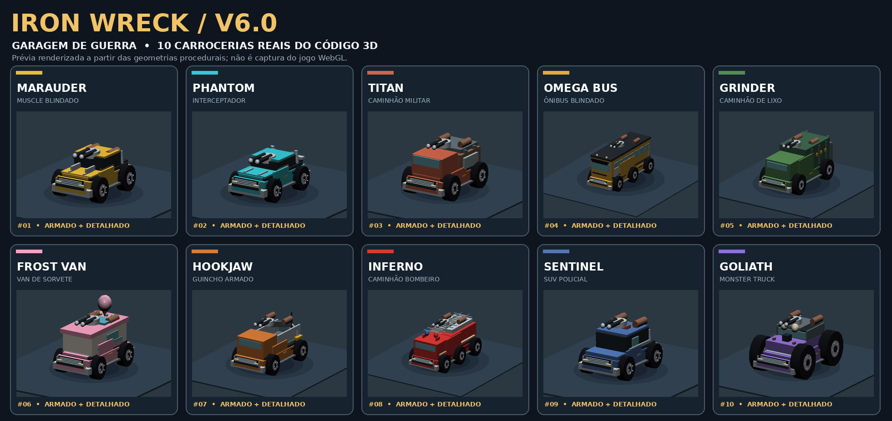
As três arenas
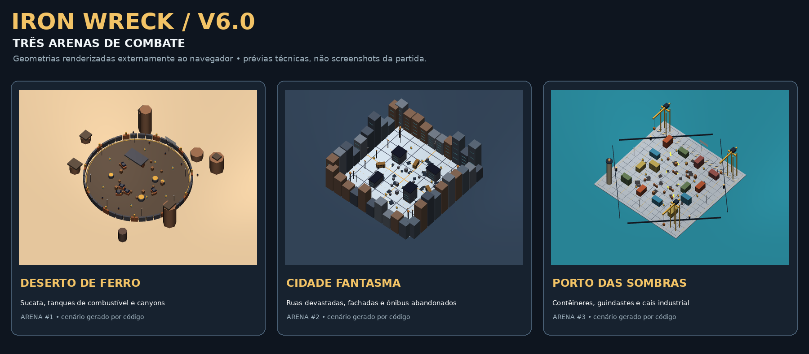
Galeria individual dos veículos
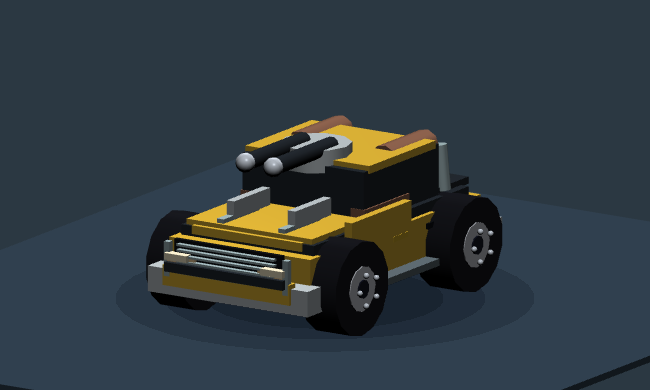
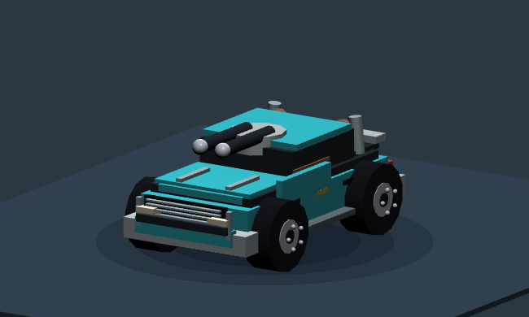
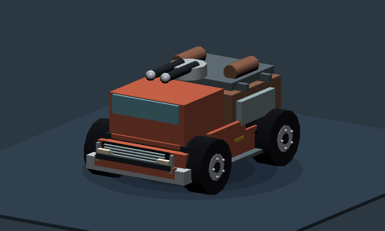
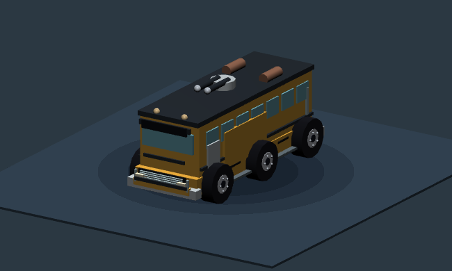
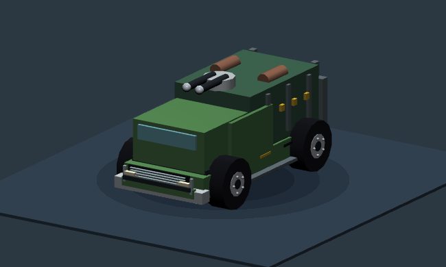
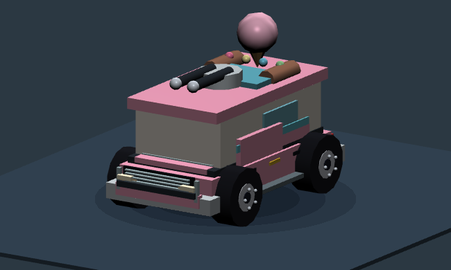
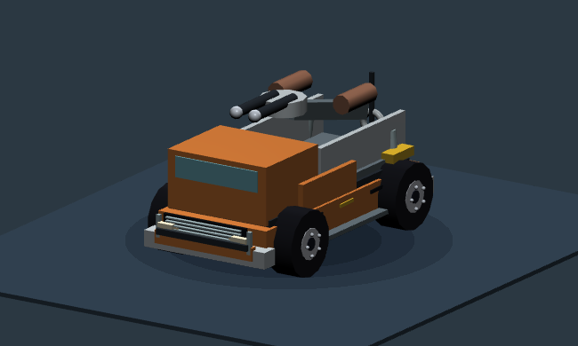
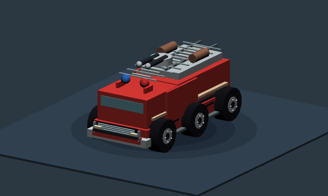
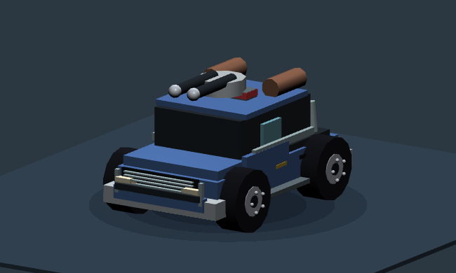
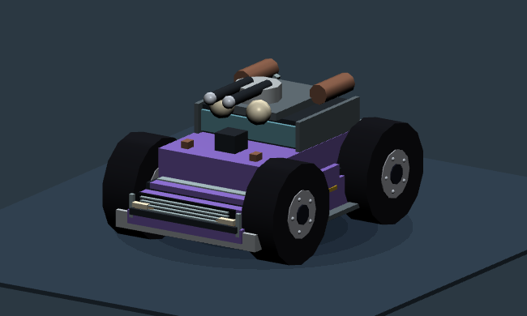